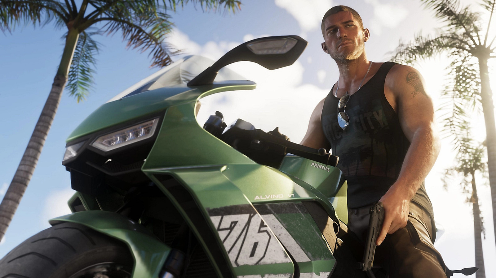

for DC Advanced UX Team.Vivi · Yohan · Libby · Lim Jisu · Katey · Anna
Back Issue

Interaction
GTA VI: white pad, leaves, a pink VI
Sony's GTA VI DualSense is white, with blue and purple on the body, pink on the buttons, leaves across the shell, and a Vice City VI in the center. It is $84, a dollar under the Gran Turismo limited pad, and it ships 19 November with the game on PS5 and Xbox Series X/S. The launch trailer puts Jason Duval and Lucia Caminos in Leonida, the Florida stand-in, with Vice City back as the center. The pad is the object you can hold. The trailer is the light already on every timeline.
索尼的GTA VI DualSense是白机身，蓝和紫走在壳体上，按键是粉的，外壳铺着叶子，中间是罪恶都市的VI。售价84美元，比Gran Turismo限定手柄少1美元，11月19日随游戏在PS5和Xbox Series X/S上市。发售预告把Jason Duval和Lucia Caminos放进Leonida，罪恶都市重新成为中心。手柄拿得住。预告已经铺满时间线。
소니의 GTA VI 듀얼센스는 흰색 몸체에 파랑과 보랏빛이 돌고, 버튼은 분홍이며, 껍질에 잎이 깔리고, 가운데에 바이스 시티 VI가 있다. 84달러로 그란 투리스모 한정 패드보다 1달러 싸고, 11월 19일 PS5와 Xbox Series X/S에 나온다. 론칭 트레일러는 제이슨 듀발과 루시아 카미노스를 레오니다에 두고 바이스 시티를 다시 중심에 놓는다. 패드는 손에 쥐는 물건이고, 트레일러는 이미 타임라인을 채운 빛이다.
Halfdan stands centered in front of the Oslo Opera House while bathers queue for a floating sauna, and he calls the winter cozy enough to feel like a cult. NewsLab and director August Jorfald, with Bendik Aunan again as Halfdan, turn the sequel into a Christmas horror musical: locals sing back, he asks for the airport, and the choir threatens a bonfire. It's Totally Even a City passed five million organic views in its launch week. He stays still so the city can move.
Halfdan站在奥斯陆歌剧院前，构图居中，冷水浴的人在浮动桑拿前排队。他把冬天说成暖得像一场邪教。NewsLab和导演August Jorfald，演员仍是Bendik Aunan，把续集做成圣诞恐怖音乐剧：本地人唱回来，他要去机场，合唱团威胁要把他送上篝火。影片It's Totally Even a City上线一周的自然播放超过五百万。他不动，城市才动。
할프단은 오슬로 오페라 하우스 앞에 가운데 서서, 떠다니는 사우나 앞에 늘어선 냉수욕 사람들을 두고 겨울이 사이비처럼 포근하다고 말한다. 뉴스랩과 감독 아우구스트 요르팔드, 배우 벤디크 아우난이 속편을 크리스마스 호러 뮤지컬로 바꿨다. 시민이 노래로 받고, 그는 공항을 찾고, 합창은 모닥불을 협박한다. 잇츠 토털리 이븐 어 시티는 공개 첫 주 오가닉 조회 500만을 넘겼다. 그는 멈추고, 도시가 움직인다.
Laurenz Brunner's Dictionary of the Illegible, from Source Type in a Zurich garage, took ten years after a 2016 ArtCenter show to sort text that refuses to be read. Entries sit in alphabetical order, so a Durer engraving can land beside a Family Guy frame, and a metal logo beside Miffy. A grawlix swears without the word. Brunner treats a watermelon emoji and a starred-out word as the same move: a person can read it, and a scanner cannot.
Laurenz Brunner的《Dictionary of the Illegible》来自苏黎世车库里的Source Type。2016年ArtCenter展出初稿后，他又花了十年，把拒绝被读的文字收成一册。条目按字母排，丢勒的版画可以挨着《Family Guy》的截图，金属乐队标志可以挨着Miffy。grawlix用标点骂人。西瓜表情和打了星号的词是同一种做法：人读得懂，扫描器读不懂。
라우렌츠 브루너의 딕셔너리 오브 더 일레지블은 취리히 차고의 소스 타입에서 나왔다. 2016년 아트센터 전시 이후 십 년 동안, 읽히기를 거부하는 글을 모았다. 항목은 알파벳 순이라, 뒤러의 판화가 패밀리 가이 장면 옆에, 메탈 로고가 미피 옆에 앉는다. 그롤릭스는 단어 없이 욕을 한다. 그는 수박 이모지와 별표로 가린 단어를 같은 수로 본다. 사람은 읽고, 스캐너는 읽지 못한다.
UnitedUs built Twinnin's mark from the coordinate points a face tracker uses, then finished it in the holographic tint of a DVD security sticker. Two badges sit on top: Licence, if a likeness is to be paid for, and Defend, a dated objection to training, synthetic media, and automated profiling, time-stamped on a public chain. The line under both is four words: Your face. Your control. The photographs are verified humans already on the registry.
UnitedUs把Twinnin的标志做成面部追踪用的坐标点，再敷上一层DVD防伪贴纸那种全息色。上面两枚徽章：Licence，肖像被使用就拿报酬；Defend，一份注明日期的拒绝，反对训练、合成媒体和自动画像，时间戳记在公链上。底下四个词：Your face. Your control. 照片里的人都是已经在登记册上验证过的真人。
유나이티드어스는 트위닌의 마크를 얼굴 추적기가 쓰는 좌표점으로 만들고, DVD 보안 스티커의 홀로그램 빛으로 마감했다. 배지 둘이 위에 앉는다. 라이선스는 초상이 쓰일 때 대가를 받고, 디펜드는 학습, 합성 미디어, 자동 프로파일링을 거부하는 날짜 있는 선언으로, 공개 체인에 타임스탬프가 찍힌다. 둘 아래의 문장은 네 단어다. Your face. Your control. 사진 속 사람들은 이미 등록부에서 검증된 인간이다.
Kenko's Pieni III is 53 mm wide and 18 grams, with a silver top and a round lens, and it hangs from a neck strap. There is no screen and no viewfinder. Two buttons cover power, the shutter, and the switch between stills and video. A lamp goes red for photos and blue for 720 by 480 video at 30 fps. The sensor is 0.32 megapixels, saved out as 1440 by 960 JPEGs. A magnet on the back sticks it to a fridge. The colors are Soda, Strawberry, Milk, and Black.
Kutuko's film for the Bullpadel Xplo 02 opens on a court that is already destroyed, then times each shot so the racket arrives as the impact. Ibón Vergara, Adrian Sánchez, and Carlos Cabrera directed the 3D. Mario Desner modeled. Rodrigo Marchán did the sound. The piece is Cinema 4D. The pace climbs in one sequence, so the racket reads as the cause rather than a product turning on a pedestal.
쿠투코가 불파델 엑스로 02를 위해 만든 필름은 이미 부서진 코트로 시작한다. 샷마다 타이밍을 잡아, 라켓이 충격 그 자체로 도착하게 한다. 이본 베르가라, 아드리안 산체스, 카를로스 카브레라가 3D를 디렉션했다. 마리오 데스네르가 모델링하고, 로드리고 마르찬이 사운드를 했다. 작업은 시네마 4D다. 속도는 한 시퀀스 안에서 올라가서, 라켓은 받침대 위 제품이 아니라 원인으로 읽힌다.
Hedley Studios' Porsche 550 J is about 80 percent of the 1950s Spyder: 2.9 meters long, 1.2 meters wide, two seats, 250 examples. A cream steering wheel sits ahead of a compact dash of circular gauges. The body keeps the twin tail grilles and the round lamps. Power is a 48-volt system, about 8 kW, or 16 kW with the RS pack, and about 80 km/h. It is not for public roads. The cockpit is the part worth keeping: the wheel, and the dials.
헤들리 스튜디오의 포르쉐 550 J는 1950년대 스파이더의 약 80퍼센트다. 길이 2.9미터, 너비 1.2미터, 2인승, 250대. 크림색 스티어링 휠 앞에 원형 게이지가 모인 작은 대시가 있다. 차체는 트윈 테일 그릴과 둥근 램프를 남긴다. 동력은 48볼트, 약 8kW, RS 패키지면 16kW, 최고 약 80km/h다. 공공 도로는 아니다. 콕핏에서 남을 것은 휠과 원형 계기다.
Plasticity 2026.2 adds a Curvature Analysis shader with Gaussian, Mean, and Max modes, so a Class-A surface shows where it tightens before you commit. Edge Align gains a Collinear solver, Symmetric or Asymmetric, plus a Skew control for how far a boundary tilts. An Assets tab in the Outliner exports bolts and other parts and drops them back into the view. Studio-only constraints follow the command that made them, and they are not saved in the file yet.
플라스티시티 2026.2는 가우시안, 민, 맥스 모드의 곡률 분석 셰이더를 더한다. 클래스 A 면이 확정되기 전에 어디가 조여지는지 보인다. 에지 얼라인에는 공선 솔버가 생기고, 시메트릭과 어시메트릭, 그리고 경계가 얼마나 기우는지 정하는 스큐가 있다. 아웃라이너의 에셋 탭은 볼트 같은 부품을 내보냈다가 뷰로 다시 떨어뜨린다. 스튜디오 전용 제약은 만든 명령을 따라가며, 아직 파일에는 저장되지 않는다.
Studio Herrström's identity for the Sony label Milkshake starts from a name that came up in a car, so the system borrows window stickers and road signs. The type is Gates, a neo-grotesque from Context Type. A lightning logomark stretches like a splash and still locks to a grid. Colors shift the old bright palette toward milkshake flavors. The sticker logic is what scales: one lockup, then it fits a sleeve or a story.
Studio Herrström为索尼厂牌Milkshake做的识别，从一个开车时冒出来的名字出发，所以系统借用车窗贴纸和路牌。字体是Context Type的新怪诞体Gates。闪电标志像一泼水一样拉开，又锁回网格。颜色把原来的亮色调往奶昔口味偏。能放大的是贴纸那套逻辑：一个锁定，然后贴进封套或一条动态。
스튜디오 헤르스트룀이 소니 레이블 밀크셰이크에 만든 아이덴티티는 차 안에서 나온 이름에서 시작한다. 그래서 시스템은 창 스티커와 도로 표지를 빌린다. 서체는 컨텍스트 타입의 네오 그로테스크, 게이츠다. 번개 로고마크는 물 튀듯 늘어나면서도 그리드에 잠긴다. 색은 예전 밝은 팔레트를 밀크셰이크 맛 쪽으로 민다. 커지는 것은 스티커의 논리이다. 락업 하나, 그리고 슬리브나 스토리에 맞춘다.
Clandestine's Cellcius C-01, a Brisbane concept with a 2026 Australian Good Design Award, hangs the battery on the outside. Eight hexagonal Hex-Core cells, 3 kWh and about 10 kg each, run from two cells at 160 kg to all eight at 220 kg and 24 kWh. Empty bays take hex bags. A wall dock charges a spare set, a backpack carries cells upstairs, and a CCS port sits flush on the tank. A 5G app does RFID or PIN entry and over-the-air updates. The hexagon is the body.
브리즈번의 클랜데스틴이 만든 셀시우스 C-01은 2026 호주 굿 디자인 어워드를 받은 콘셉트다. 배터리를 차체 밖에 건다. 육각 헥스코어 셀 여덟 개, 각 3kWh, 약 10kg. 두 개면 160kg, 여덟 개면 220kg에 24kWh다. 빈 칸에는 육각 가방이 달린다. 벽 독이 예비 셀을 충전하고, 백팩으로 셀을 들고 올라가며, 탱크 위에는 평면 CCS 포트가 있다. 5G 앱이 RFID나 PIN 진입과 무선 업데이트를 한다. 육각형이 차체다.
Carolina Incerti's A Book for Making Books, from her Open Books research at Art Academy Bergen, is a guide you cut into eight templates, from a one-page zine to a multi-section stitch. The club tested the folds. The palette is primary, taken from playground toys. Body type is CirrusCumulus, Clara Sambot's open-source face, which reads a little like a child's hand. She wanted the page to feel like a primary-school teacher, not a perfect specimen.
Carolina Incerti的《A Book for Making Books》来自她在卑尔根艺术学院的Open Books研究。这是一本要裁开的指南，裁成八套模板，从一页小志到多帖线装。读书会试过这些折法。调色板是原色，来自游乐场的玩具。正文用Clara Sambot的开源字体CirrusCumulus，有一点小孩笔迹。她要这一页像小学老师，而不是一件完美样本。
카롤리나 인체르티의 어 북 포 메이킹 북스는 베르겐 예술학교의 오픈 북스 연구에서 나왔다. 잘라 내는 안내서이고, 한 장 진부터 여러 첩 실매기까지 템플릿 여덟 개다. 북클럽이 접기를 시험했다. 팔레트는 놀이터 장난감에서 온 원색이다. 본문은 클라라 삼보의 오픈소스 서체 시러스큐뮬러스이고, 아이 손글씨에 가깝다. 그녀는 페이지가 완벽한 표본이 아니라 초등학교 선생님처럼 느껴지기를 바랐다.
Nik Arthur and Emi Takahashi built an A24 identity from duckweed on a Montreal swamp. They shot in reverse: a laser-cut plywood shape cleared a hole in the weed, and the water was the canvas. The take took a day. The edit is frame timing. The same habit shows up in a J. Cole film of fire and embers, made with Anna Chandler, and in a Cosmos piece with Odessa A'zion. The material does the drawing. A mark the sun printed on a leaf does not come off.
닉 아서와 에미 다카하시는 몬트리올 늪의 개구리밥으로 A24 아이덴티티를 만들었다. 거꾸로 찍었다. 레이저로 자른 합판이 풀에 구멍을 내고, 물이 캔버스다. 테이크는 하루가 걸렸다. 편집은 프레임 타이밍이다. 같은 습관이 안나 챈들러와 만든 J. 콜의 불과 불씨, 그리고 오데사 에이전이 나온 코스모스 작업에도 있다. 재료가 그림을 그린다. 해가 잎에 찍은 자국은 지워지지 않는다.
Runway Creative now sits in the Claude Marketplace, and the part that matters is the agent. You hand Runway Agent a brief. It writes a plan, picks a model for each shot, and assembles the cut. The workspace holds Gen-4.5, Aleph 2.0, Seedance 2.5, Kling 3.0, and ElevenLabs V4. Claude Motion, in beta on Team and Enterprise, exports an animation into Runway for footage, voice, and music. The purchase path is enterprise spend. The interface is a conversation that ends as a timeline.
런웨이 크리에이티브가 클로드 마켓플레이스에 들어왔고, 중요한 것은 에이전트다. 브리프를 넘기면 계획을 쓰고, 샷마다 모델을 고르고, 컷을 조립한다. 작업 공간에는 Gen-4.5, Aleph 2.0, Seedance 2.5, Kling 3.0, ElevenLabs V4가 있다. 베타 클로드 모션은 애니메이션을 런웨이로 내보내 영상, 보이스, 음악을 붙인다. 인터페이스는 대화이고, 끝은 타임라인이다.
Northwestern's GlassTENG is a glasses frame with no display. Three sandwiches of PDMS silicone and FEP read the face: the nose bridge for pulse, hard blinks, and brow lifts; a temple arm for clenching and chewing; a third above the ear, pressed there by the frame itself. A blink lands around 200 to 500 millivolts, a jaw clench near 1.5 volts. On 20 people, a Random Forest sorted six actions at 93.8 percent. The sensing front-end draws 4.1 microwatts. The frame is the button.
노스웨스턴의 글래스텡은 화면이 없는 안경테다. PDMS 실리콘과 FEP를 겹친 센서 셋이 얼굴을 읽는다. 코 다리는 맥박, 힘준 눈깜박, 눈썹을 보고, 관자 쪽 다리는 이를 악물기와 씹기를, 귀 위의 세 번째는 테가 스스로 눌러 붙인다. 눈깜박은 약 200에서 500밀리볼트, 이를 악물면 1.5볼트 근처다. 20명에서 랜덤 포레스트가 동작 여섯 가지를 93.8퍼센트로 가렸다. 센싱 전단은 4.1마이크로와트다. 테가 버튼이다.
Jean-Baptiste Fastrez's Zodiac mirror for Moustache is a high-gloss ceramic half-ring shaped like an inflatable boat. Where the ceramic stops, the reflection finishes the tube, so the glass is structure rather than a surface you hang a frame on. Sphera is the other piece: oversized chrome spheres, the old fittings that clamped mirror panels to a wall, scaled until the hardware is the ornament. He traced that fitting to Carlo Mollino's apartment in Turin, then to ordinary bathrooms.
장바티스트 파스트레가 무스타슈를 위해 만든 조디악 거울은 고광택 세라믹 반고리이고, 형태는 공기 주입식 보트다. 세라믹이 끝나는 곳에서 반사가 튜브를 완성하므로, 유리는 프레임을 거는 표면이 아니라 구조다. 다른 하나인 스페라는 거울판을 벽에 고정하던 옛 철물을 크롬 구체로 키워, 철물 자체가 장식이 된다. 그는 그 철물을 토리노의 카를로 몰리노 아파트에서 찾고, 이어서 평범한 욕실에서 찾았다.
AMD's FSR 4.1 reaches the Radeon RX 6000 today in Adrenalin 26.10.1, and the same build covers Ryzen AI Max 300 and 400 plus Ryzen AI 9 300 and 400. Xbox Series S and X, and the Xbox Ally and Ally X, are on the same pass. Jason Ronald says developers get it very soon. Jack Huynh says the team went back into the model and retuned the code path rather than porting it whole. It is listed for more than 300 games, among them Cyberpunk 2077, Battlefield 6, and Assassin's Creed Shadows.
FSR 4.1今天随Adrenalin 26.10.1来到RX 6000，并覆盖Ryzen AI Max与Ryzen AI 9的300、400系列。Xbox Series和Ally同一批跟上。开发者很快就能用。团队回到模型里重调路径，不是整段搬过去。超过300个游戏，包括Cyberpunk 2077、Battlefield 6和Assassin's Creed Shadows。
AMD의 FSR 4.1이 오늘 아드레날린 26.10.1과 함께 라데온 RX 6000에 온다. 같은 빌드가 라이젠 AI 맥스 300·400과 라이젠 AI 9 300·400도 덮는다. Xbox Series S·X와 Ally, Ally X도 같은 차례다. 개발자는 곧 받는다. 팀은 모델로 돌아가 코드 경로를 다시 맞췄다. 300개가 넘는 게임, 사이버펑크 2077, 배틀필드 6, 어쌔신 크리드 섀도가 들어 있다.